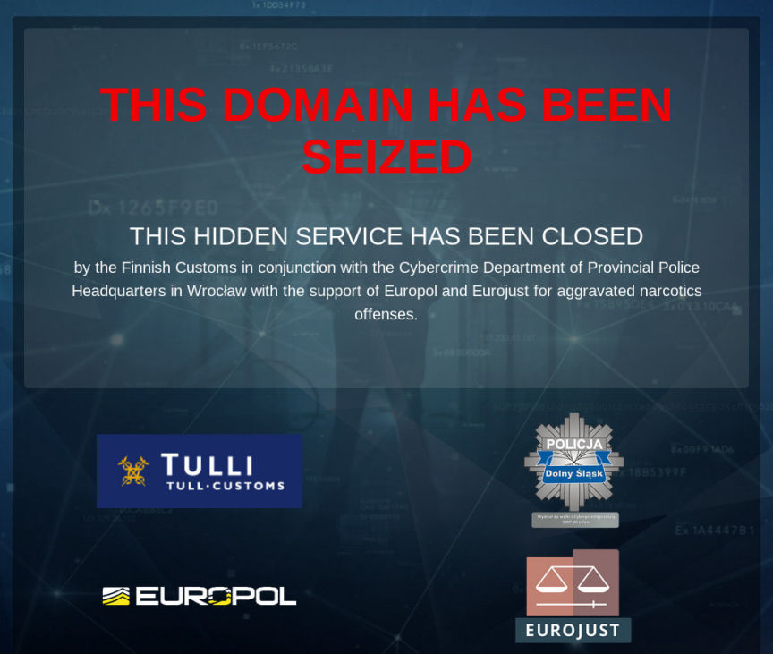
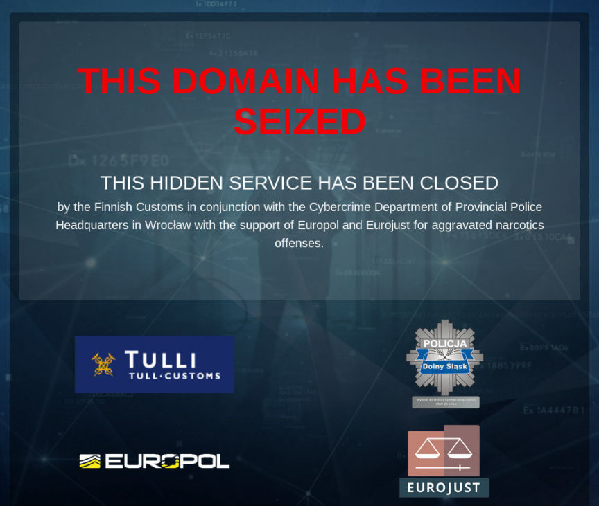

The Majority of Market Admins Don't Get Caught
~4 min read | Published on 2021-07-04, tagged Darkweb-Market, General-News using 841 words.
Although many high-profile cases involving darkweb market admins make the news, the majority of market creators retire in peace.
There is no doubt a massive amount of risk involved in the administration of a darkweb marketplace. The creators of markets, if caught, face lengthy prison sentences (often in the United States). The precedent of life in a U.S. prison is so overwhelming that at least one alleged market administrator–Alexandre Cazes of Alphabay–took his own life to avoid a cell in the States. Others, such as Gary Davis of Silk Road, fight extradition for years only to delay the inevitable. Most cases, such as the ones referenced above, make headlines in mainstream media outlets and attract a lot of attention. Authorities make statements about their promise to hunt down anyone bold enough to commit a crime outside the United States. Former U.S. Attorney Jeff Sessions, for example, made the following statement after the indictment of Cazes:
“Make no mistake, the forces of law and justice face a new challenge from the criminals and transnational criminal organizations who think they can commit their crimes with impunity using the darknet. The darknet is not a place to hide. The Department will continue to find, arrest, prosecute, convict, and incarcerate criminals, drug traffickers, and their enablers wherever they are. We will use every tool we have to stop criminals from exploiting vulnerable people and sending so many Americans to an early grave. I believe that because of this operation, the American people are safer – safer from the threat of identity fraud and malware, and safer from deadly drugs.”
The U.S. is not alone; other countries rarely turn a blind eye to unregulated crypto markets. Other members of the Five Eyes (Australia, Canada, New Zealand, the United Kingdom) and Germany are relatively competent investigators of marketplace admins and staff. A very recent example involves the indictment of an Australian couple in Germany who allegedly operated DarkMarket. German prosecutors unveiled an indictment against the duo on June 29, 2021.
To the newcomer as well as those with a limited perspective of this sector of the market, it might appear as if law enforcement will eventually catch up to a market administrator in the vast majority of cases. Stern words from government officials and official press releases efficiently instill this narrative. Their allies in the press only contribute to this narrative. In reality, though, only a minority of marketplace administrators catch charges related to marketplace administration.

Since most governments do not hesitate to publicly congratulate themselves after disrupting a marketplace, it is not difficult to identify the cases in which market administrators landed in custody. Most of the cases are well-known even by people who do not follow this underground scene. There are the Silk Roads, Alphabay, DarkMarket, French DeepWeb Market, Berlusconi, Valhalla, Wall Street, Flugsvamp 2.0, Hansa, Sheep, Sipulimarket, and certainly more. Most of those markets ended in high-profile cases and were perhaps the largest (or among the largest) markets of their time. Many of the operations that resulted in the seizures of the markets listed above mark significant accomplishments for the law enforcement agencies involved. Indeed, some of the cases required fascinating investigative techniques (with only some parallel construction involved!).

But, compared to the number of markets that successfully exit scammed, the list paints a different picture. There was a period of time–essentially during DeepDotWeb’s prime years–where it seemed as if a market launched every month and a different market exit scammed every other month. There are far too many to list. Some of the more noteworthy exit scams included Empire, Nightmare, Apollon, BitBazaar, Apollon, SamSara, Grey, Avaris, Cryptonia, Pax Romana, DeepSea, dBay, Genesis, Dream Alt, TradeRoute, Evolution, Silk Road 3.1, Avior, Kingdom, Europa, Olympus, Dream, and Wall Street. There are so many others, including much more prominent markets than some of those included here.
Wall Street appears in both lists intentionally; the exit scam triggered the final stages of the investigation into the market’s administration, resulting in an exit scam and market seizure.
There are a handful of markets that shut down peacefully without stealing cryptocurrency by design. CGMC is perhaps the most well-known market in this category. DeepMix shut down in a similar manner. There are others as well but these are fewer in number than markets seized by law enforcement. There is no financial incentive to shut down in such a manner. There are some markets in existence today that will likely shut down gracefully but the majority will likely exit scam.

The balance is clearly tipped in favor of the anonymous market administrator. Law enforcement, even with all the resources at their disposal, seems to barely keep up.
As is the case with many drug vendors, market administrators might land in police custody for a crime unrelated to the market (such as drug possession or even a tax-related crime). I do not think these cases (and I am aware of only one) count as a successful anti-marketplace operation by law enforcement even though it resulted in the shutdown of a market.
There is no doubt a massive amount of risk involved in the administration of a darkweb marketplace. The creators of markets, if caught, face lengthy prison sentences (often in the United States). The precedent of life in a U.S. prison is so overwhelming that at least one alleged market administrator–Alexandre Cazes of Alphabay–took his own life to avoid a cell in the States. Others, such as Gary Davis of Silk Road, fight extradition for years only to delay the inevitable. Most cases, such as the ones referenced above, make headlines in mainstream media outlets and attract a lot of attention. Authorities make statements about their promise to hunt down anyone bold enough to commit a crime outside the United States. Former U.S. Attorney Jeff Sessions, for example, made the following statement after the indictment of Cazes:
“Make no mistake, the forces of law and justice face a new challenge from the criminals and transnational criminal organizations who think they can commit their crimes with impunity using the darknet. The darknet is not a place to hide. The Department will continue to find, arrest, prosecute, convict, and incarcerate criminals, drug traffickers, and their enablers wherever they are. We will use every tool we have to stop criminals from exploiting vulnerable people and sending so many Americans to an early grave. I believe that because of this operation, the American people are safer – safer from the threat of identity fraud and malware, and safer from deadly drugs.”
The U.S. is not alone; other countries rarely turn a blind eye to unregulated crypto markets. Other members of the Five Eyes (Australia, Canada, New Zealand, the United Kingdom) and Germany are relatively competent investigators of marketplace admins and staff. A very recent example involves the indictment of an Australian couple in Germany who allegedly operated DarkMarket. German prosecutors unveiled an indictment against the duo on June 29, 2021.
To the newcomer as well as those with a limited perspective of this sector of the market, it might appear as if law enforcement will eventually catch up to a market administrator in the vast majority of cases. Stern words from government officials and official press releases efficiently instill this narrative. Their allies in the press only contribute to this narrative. In reality, though, only a minority of marketplace administrators catch charges related to marketplace administration.
The DarkMarket Seizure Banner
Since most governments do not hesitate to publicly congratulate themselves after disrupting a marketplace, it is not difficult to identify the cases in which market administrators landed in custody. Most of the cases are well-known even by people who do not follow this underground scene. There are the Silk Roads, Alphabay, DarkMarket, French DeepWeb Market, Berlusconi, Valhalla, Wall Street, Flugsvamp 2.0, Hansa, Sheep, Sipulimarket, and certainly more. Most of those markets ended in high-profile cases and were perhaps the largest (or among the largest) markets of their time. Many of the operations that resulted in the seizures of the markets listed above mark significant accomplishments for the law enforcement agencies involved. Indeed, some of the cases required fascinating investigative techniques (with only some parallel construction involved!).
Wall Street Market Seizure Banner
But, compared to the number of markets that successfully exit scammed, the list paints a different picture. There was a period of time–essentially during DeepDotWeb’s prime years–where it seemed as if a market launched every month and a different market exit scammed every other month. There are far too many to list. Some of the more noteworthy exit scams included Empire, Nightmare, Apollon, BitBazaar, Apollon, SamSara, Grey, Avaris, Cryptonia, Pax Romana, DeepSea, dBay, Genesis, Dream Alt, TradeRoute, Evolution, Silk Road 3.1, Avior, Kingdom, Europa, Olympus, Dream, and Wall Street. There are so many others, including much more prominent markets than some of those included here.
Wall Street appears in both lists intentionally; the exit scam triggered the final stages of the investigation into the market’s administration, resulting in an exit scam and market seizure.
There are a handful of markets that shut down peacefully without stealing cryptocurrency by design. CGMC is perhaps the most well-known market in this category. DeepMix shut down in a similar manner. There are others as well but these are fewer in number than markets seized by law enforcement. There is no financial incentive to shut down in such a manner. There are some markets in existence today that will likely shut down gracefully but the majority will likely exit scam.

The Sipulimarket seizure banner
The balance is clearly tipped in favor of the anonymous market administrator. Law enforcement, even with all the resources at their disposal, seems to barely keep up.
As is the case with many drug vendors, market administrators might land in police custody for a crime unrelated to the market (such as drug possession or even a tax-related crime). I do not think these cases (and I am aware of only one) count as a successful anti-marketplace operation by law enforcement even though it resulted in the shutdown of a market.